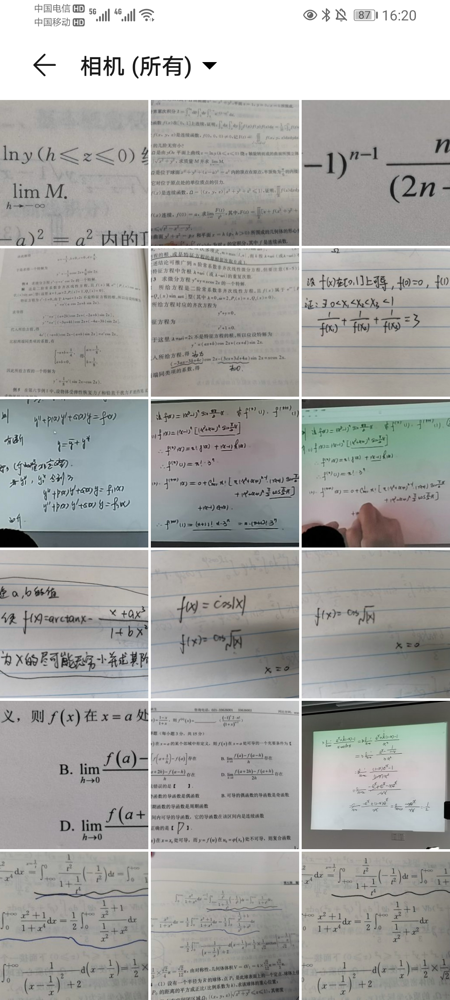

2021对我来说十分匆忙与短暂，以至于我在最后一天才有闲暇，来回望过去的这一年。
我想了很久，今年似乎很难用一句话或一个词来概括我过去十二个月的经历了。以五月底的插班生考试为分界线，我的2021的上下半年过得截然不同。
贯穿我上半年的两个词应该是犹豫与遗憾。年初犹豫着是否要正式进入一段感情，四月初犹豫着是否要把考插的路坚持走完，也在插班生和课内绩点之间犹豫不决。最终，这些犹豫都变成了遗憾。
插班生考试以一道证明大题的差距结束了我九个月的旅程，绩点以0.002的差距而错失了转入CS的机会。我只能给自己冠上“惜败”的名号聊以自慰。本来对未来有无穷的憧憬与计划，但变化总会挫败计划好的道路，使人怀疑按原有的计划是否还能走到理想的目的地，也会使人踌躇，究竟是该坚持还是放弃。
关于考插的感想我在年中的时候已经写过，如果有现在也在这条路上感到迷茫的21级同学也可以去看看 : )
我的生活似乎没什么变化，一点小小的梦想刚发芽就死去，不算什么大事，毕竟梦想的田野上，到处都是长眠的种子。但考完插班生之后的一段时间，我似乎进入了一种浑浑噩噩的状态。再也不必六点钟起床和考研人抢自习室了，再也不用对着竞赛题抓破脑袋了，再也不用看着手机上的倒数日期而焦虑了。我报复式地玩了两星期的怪猎和Apex。考完后一个月就是期末考试，但我似乎只是为了绩点而机械地复习着。就连暑假时的数模训练和icpc训练，也只是为了让自己不感到空虚的填充物而已。
在仲夏时节，我听闻了几个同学复读出分的消息。在十二个月的努力之后，他们都获得了十分理想的结果。也有几个人来问过我“后悔没去复读吗”。我的回答跟问我“后悔考插吗”时候的回答相同: 我不后悔。如果重来一次的话，以现在的心智和阅历，还是会做出同样的选择。
但是噩梦仍萦绕着我，树叶与飞鸟新旧轮替，夜晚却每夜如期而至。不只几个晚上，我都在想，如果在插班生考前看过柯西不等式的证明，如果我的工图画的再好一点点拉高绩点，那么现实会不会有那么一点点的不一样？
在几个月后，因写论文需要，我翻看了尼采的《权力意志》，才知道那段时间的我，其实陷入了类似虚无主义的漩涡之中。他说:“虚无主义意味着最高价值的自行贬值。”
当自己的需求可以被轻易代替时，那么以前有意义的事就会变得没有意义。仅仅是个人的主观给一个事物赋予意义，我需要它就有意义，若不需要，它存在的本身对我而言就是毫无意义。
是我梦想中的将来想成为的那个自己，那个开阔，非凡，卓越和不凡的自己，成为了把我拉出虚无的救赎。我最终还是跟上半年的我和解。
星宇低垂，旷野寥落，暮夏时节的银河分外清朗，也无比落寞。
九月份开学后，还是很忙，繁重的课业似乎让我明白了为什么插班生只有大一能考（？
我还是喜欢夜跑，还是习惯在跑完后抬头仰望寰宇，它如此辽阔。暮夏时分仍能看见夏日大三角，深秋之时猎户座依然清晰可见，就跟一年前我看到的时候没有区别。就跟上亿岁月前的它们没有区别。此时跑道和球场上还有挥洒汗水的人们，图书馆二楼应该有几张桌子围坐着小声讨论的小组成员，学院楼和泰山科研楼里应该仍旧灯火通明，马路沿边也许零散的分布着牵手散步的情侣，与我擦身而过的那个人可能是个内心十分丰富多彩的人，北广应该弥漫着勾魂的夜宵香味。不过，这些似乎都与我无关。每晚这时，也许也是我最与在赤壁下泛舟时的苏文忠先生心境最相近的时候。
我忙于各种竞赛，还参加了学生组织，尽力让自己的生活变得充实。直到发现一个人的精力是无法在所有方面都做好的。几经挣扎，我最终还是选择退掉了一个科创队。（在这里向拉我进去的金康和莫指导说声对不起)最终我的目标还是定在了算法竞赛上，虽然我起步晚了点，再努力最终可能也就是个铜牌或者什么也没有，但我仍决定前往。也许这也是一种“罗曼罗兰式的英雄主义”吧（雾
尼采其实也不是那么悲观的人，他还写过这样的话 “某天，你会邂逅高大的自己，不是平日里的自己，而是更清澈，更高级的自己。在那一瞬间，你会如受到恩宠一般察觉到高大自我的存在。”
“请珍视那个瞬间。”
后记:
今年是我第二年给自己写年终总结了。相比去年，今年我的总结似乎字数少了点，没有了去年那么多浮华的词藻。或许是因为我意识到我不需要太多夸张的词汇去表述我的心情，或许是因为我经历的事情变少了一点，又或许只是单纯的因为我的读书数量没有去年多了（
除去上面稍微有些沉重的部分，今年我的收获还是很多的。第一次在数学竞赛得奖，第一次跑完了十公里，第一次通宵后去看日出，第一次玩恐怖密室，第一次去猫咖，第一次参加数学建模，第一次打保龄球等等。这些点滴，也让我的今年显得没那么枯燥。
我很高兴我把在年底写总结的习惯坚持了下来，像去年这时说过的那样，我也不希望内心丰富的情感在生活公式化的磨砺中消逝，因此我选择以这样的方式来记录。
祝大家新的一年万事顺遂
新年快乐！
本作品采用知识共享署名-非商业性使用进行许可。
本文作者：InariInDream
本文链接：https://inariindream.github.io/2022/01/01/2021%E5%B9%B4%E7%BB%88%E6%80%BB%E7%BB%93-%E5%BD%92%E6%A1%A3/